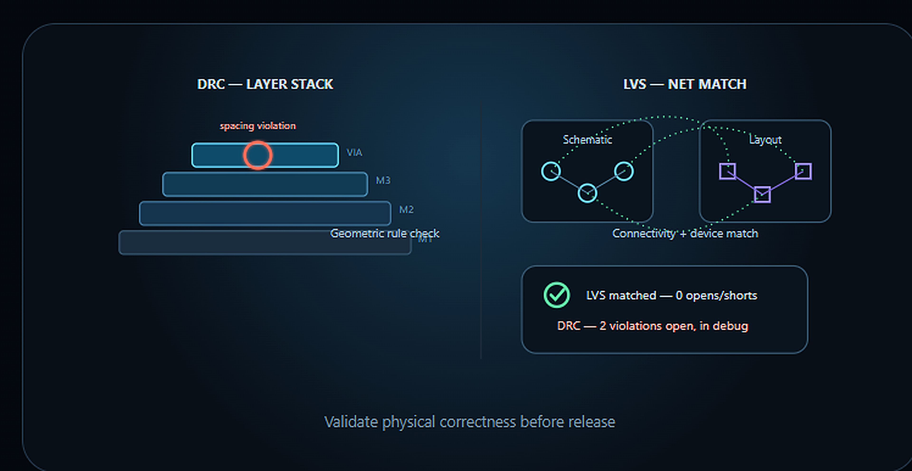
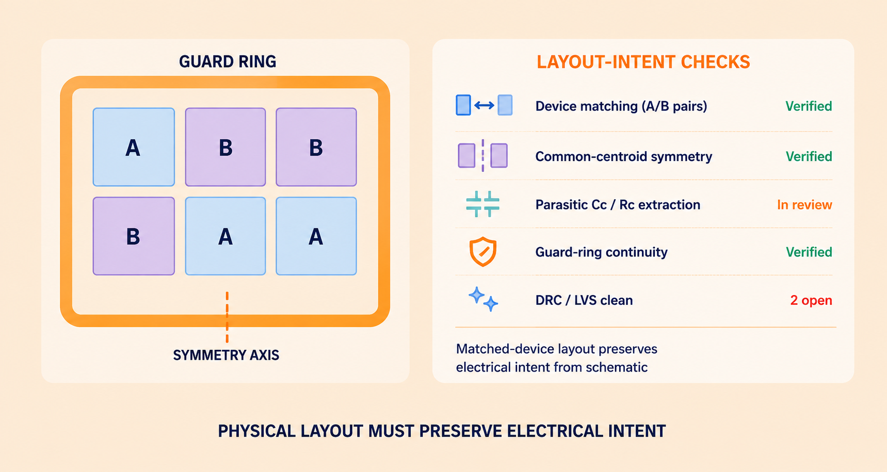

SIGNOFF
Physical Verification — DRC, LVS & Signoff
Physical verification validates that the final layout follows manufacturing rules and represents the intended circuit connectivity. We support structured violation analysis, debug and closure activities.


Validate physical correctness before release
DRC support
- Rule violation analysis
- Geometrical issue classification
- Layout debug
- Repeated-violation analysis
LVS support
- Connectivity mismatch analysis
- Net and device comparison
- Layout-versus-schematic debug
- Closure tracking
Signoff support
- Violation prioritisation
- Root-cause documentation
- Fix validation
- Final status reporting
Engineering outcomeCleaner physical verification status and a disciplined path towards signoff readiness.